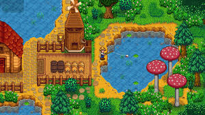

Stardew Valley foi fortemente inspirado na série harvest moon, com adições pelo criador do jogo, Eric Barone , para resolver algumas das deficiências destes jogos, aproveitando a oportunidade como um exercício para melhorar a sua própria programação e habilidade de design de jogos.
Barone desenvolveu o título por conta própria ao longo de quatro anos, e interagiu com frequência com os jogadores que estavam interessados no título para obter feedback. Chucklefish Games abordou Barone, com a oferta para publicar o título a meio-caminho do desenvolvimento, permitindo Barone concentrar-se mais em completar o jogo que ele queria fazer.
